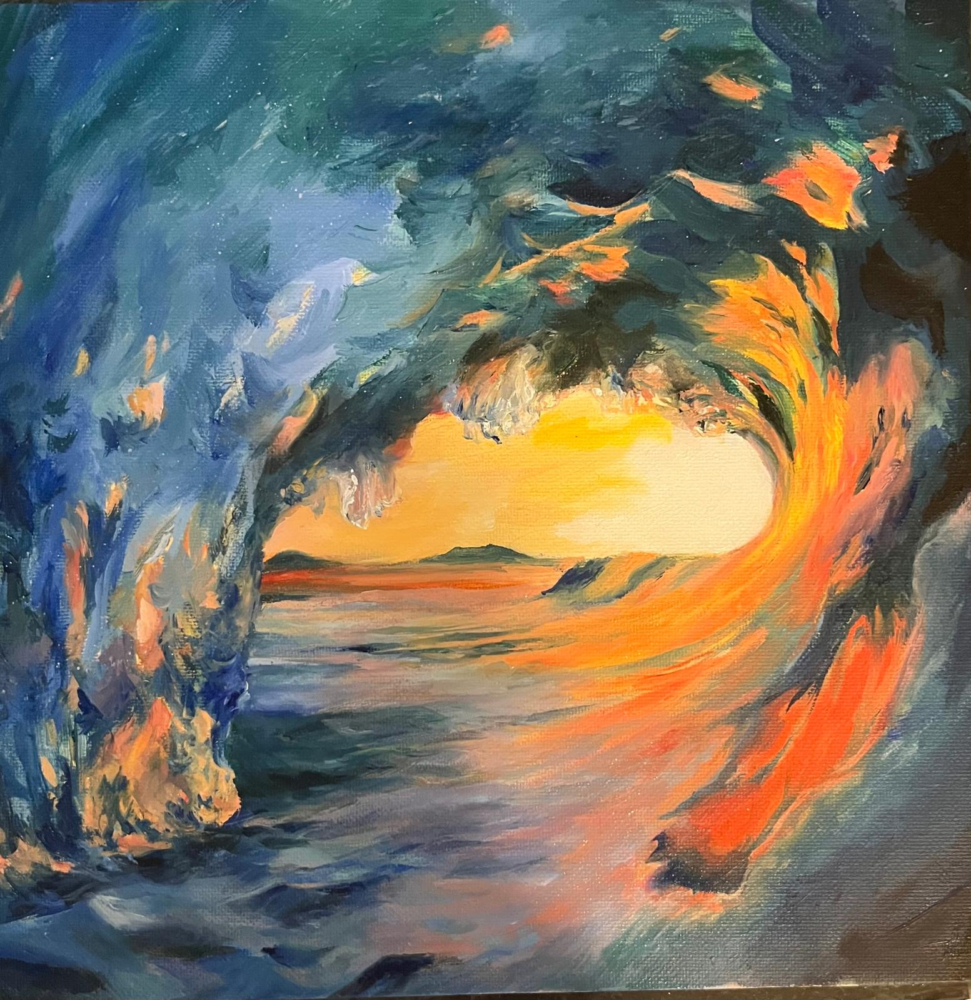
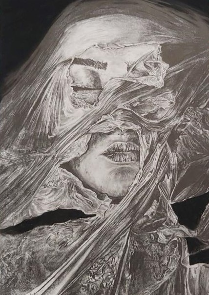
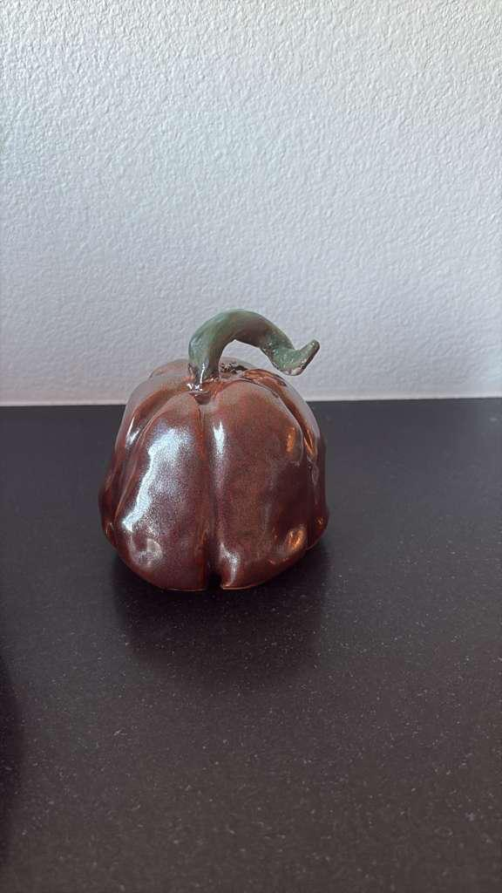
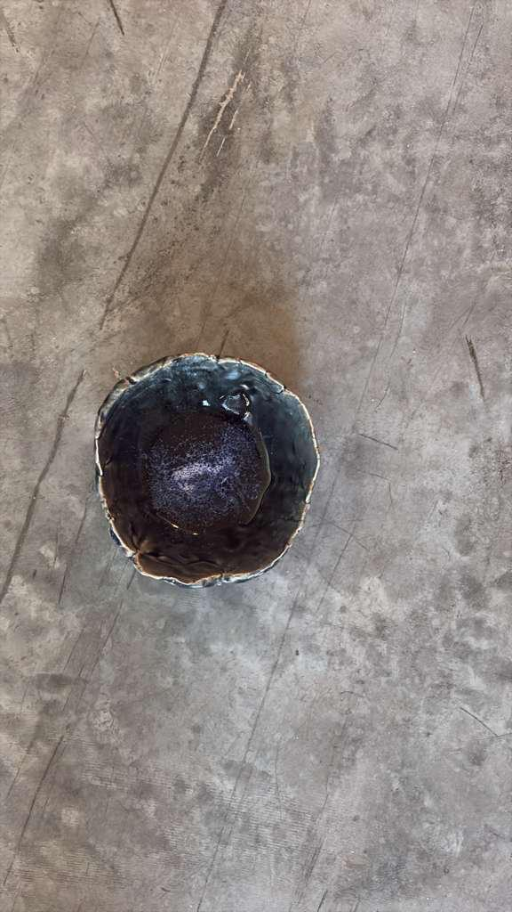

Art

Wave

Innocence

Black and White

Wisdom
For more of my artwork, visit my art portfolio
Ceramics

Pumpkin

Ghost

Bowl
A mind in pursuit, drifting through the spaces where intuition, engineering, and imagination intertwine.
Professor Ruqi Zhang, Junbo Li June 2024–July 2025
I developed SDSI, a variational inference framework that restricts posterior variances to a sparse, low-dimensional subspace, enabling scalable Bayesian neural networks with improved efficiency. The method introduces a subspace addition strategy that preserves high-gradient directions, resulting in enhanced predictive accuracy and calibration across both clean and corrupted datasets. SDSI achieved 76.36% accuracy, 0.9655 AUROC, and 0.0014 ECE on CIFAR-100 (10% subnet), outperforming Sparse BNNs, VBLL approaches, and Laplace Subnetworks. Notably, the framework reaches full BNN-level predictive performance while requiring only 40 training epochs, significantly reducing computational cost.
ReScience C — First Author
“[Re] BiRT: Bio-Inspired Replay in Vision Transformers” (Accepted)
I conducted a reproducibility study on BiRT, a continual learning framework that leverages vision transformers with constructive noise and episodic memory replay to mitigate catastrophic forgetting. The project involved re-implementing the method, evaluating performance across multiple benchmarks, and analyzing the robustness and practical applicability of the approach. The resulting findings, which shed light on BiRT’s reproducibility and limitations, were published in ReScience C.
Oct 2023–June 2024
Special thanks to Jinen Setpal and ML@Purdue for their support and resources.
Professor Muhammad Hussain, Min Sung Kim Jan 2023–May 2023
I worked inside the Birck Nano Center’s ISO-class cleanroom to manufacture MOSCAPs and gained end-to-end experience with semiconductor process integration. Over the semester, I performed thin-film deposition using ALD, PVD sputtering, and e-beam evaporation; executed photolithography patterning and reactive-ion etching steps; and carried out wafer thinning and electrical characterization workflows. I also analyzed the dielectric properties of HfO₂ gate oxides through IV and CV measurements, examining how interface behavior, oxide thickness, and material parameters influenced overall device performance.
Dr Prassana Date, Dr Shruti KulkarniMay 2023–Aug 2023
IEEE International Conference on Rebooting Computing (ICRC) - First Author
“An FPGA-Based Neuromorphic Processor with All-to-All Connectivity” (Accepted)
I developed a preliminary implementation of an FPGA-based neuromorphic processor featuring all-to-all connectivity. The work demonstrated a low-cost and energy-efficient architecture implemented on an Artix-7 FPGA. During my research internship at Oak Ridge National Laboratory, I implemented Spiking Neural Networks (SNNs) in Verilog on the Basys3 development board using the Xilinx Vivado toolchain, validated the architecture on algorithmic test cases, and designed custom IP modules including UART transceivers, receivers, and FIFO buffers operating at 9600 bps. The resulting open-source implementation formed the basis of our conference publication and provides a foundation for further research toward a production-ready neuromorphic processor.
Hunai Knife
Metal Ring
Metal Rose
Solar System
Bedroom Scene
Telephone
An Alien Story
Character Modelling
Wheel
Microscope
Pillar
Plane
Purdue Arch
Purdue Engineering Fountain
Wave
Innocence
Black and White
Wisdom
For more of my artwork, visit my art portfolio
Pumpkin
Ghost
Bowl